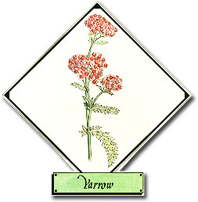
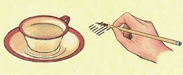
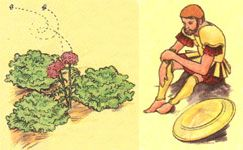

It was Chiron, the learned centaur of Greek mythology, who taught Achilles to use crushed yarrow leaves to stanch bleeding. In the shadow of Troy, the young warrior healed the wounds of his fighting men with this herb. The Greeks recalled the association when they named the plant achilleios - "of Achilles" - which later inspired the Latin genus name Achillea. The finely divided, fernlike leaves suggested the relatively straightforward species name, millefolium, or "thousand leaves." The plant's common names, soldier's woundwort and milfoil, also call attention to yarrow's two most outstanding characteristics.
This member of the Compositae, or daisy, family has much in common with its close cousin chamomile. Both are found worldwide, and both contain an oil that is responsible for the antibacterial, anti-inflammatory, and antispasmodic properties of these useful plants.
The flowering stalks of yarrow can be dried and used in a hot, strong tea to promote sweating during dry fevers, while a room-temperature tea is said to relieve indigestion, especially when brewed in combination with chamomile and peppermint. American Indians used the roots of this perennial as an anesthetic and the fresh or dried leaves as an eyewash and soothing ointment for earaches and sore nipples. The English used yarrow as a substitute for hops in beer, and the Chinese cast the cut and dried stems for I Ching readings.
In accordance with an old custom, young women of the British Isles tickled their noses with yarrow sprays, singing "Yarroway, yarroway, bear a white blow/ If my lover loves me, my nose will bleed now." (Given yarrow's reputation as a styptic, those who participated in this ritual must have been disappointed.)
Yarrow is easily cultivated, and is thought to repel insects and to increase the aromatic oils of other nearby herbs. The white or sometimes pinkish flower sprays are usually rather plain, but a number of more showy cultivars are available. While many people consider yarrow too aggressive and persistent to include in their gardens, it has often been used as a ground cover on dry, poor soils where grass will not grow.
Wild yarrow is a very common weed that can be found on open, well-drained sites almost anywhere in the continental U.S. Yarrow initially produces a mat of low basal leaves, but the herb later develops stems one to three feet high and flat-topped clusters of flowers that bloom from May to September. Yarrow can be gathered from the wild with no fear of seriously depleting the resource; spring is the best time to transplant the herbs from the field to your garden. Seeds should be sown directly atop a rather fine soil and kept moist until they germinate.
- Virginia Hopkins
EDITOR'S NOTE: Taylor's Herb Garden, 1535 Lone Oak Rd., Vista, CA 92084 (catalog $1.00), and Meadowbrook Herb Garden, Rt. 138, Wyoming, RI 02898 (catalog $2.00), sell yarrow plants and seeds.
|
 Yarrow tea promotes sweating. The leaf stems are used for I Ching readings. |
 Yarrow is said to repel insects. Crushed yarrow leaves stanch bleeding. |
 |